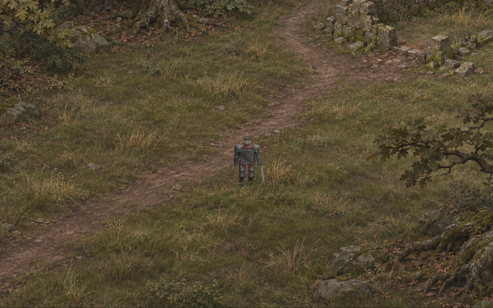
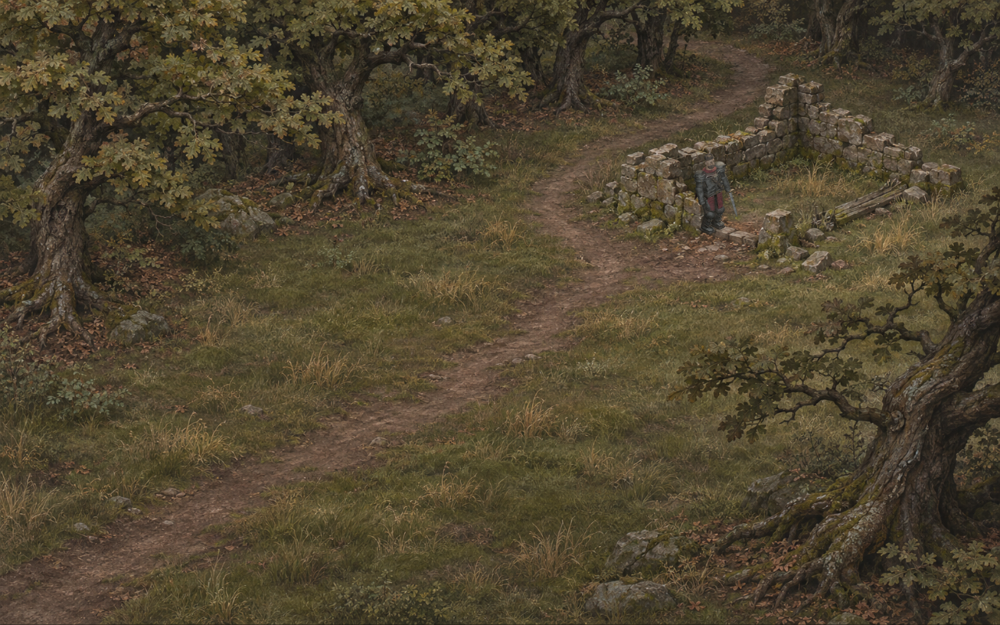

HOLLOWBANE · WARRIOR INTEGRATION · REVIEW CANDIDATE
Same woodland. Same pose and scale.
Compare the original character against the targeted material and contact treatment. Both stills use the same 1280×800 canvas, root (620,495), South idle 0 and authored scale 0.5. On smaller screens, scroll across the image.
Real movement through the scene
Open a still to inspect native pixels. Foliage, front-of-trunk and ruin captures use the full 1280×800 composition; the path capture uses the 960×600 follow camera. All come from actual movement, without repositioning the actor.





Eight-direction movement
Real keyboard movement in a continuous eight-direction route. The recording shows the 960×600 source-scale canvas in a 1280×800 browser. The live prototype provides the full-size comparison and real path, woodland, foliage and ruin walks.
No new poses or environment pixels. Existing idle/walk pixels receive a deterministic tonal treatment. Walking cadence and diagonal steering are calibrated only in the prototype. Baked light direction, eight-view turn coverage and conservative foliage masks remain limitations. Artistic acceptance remains yours.